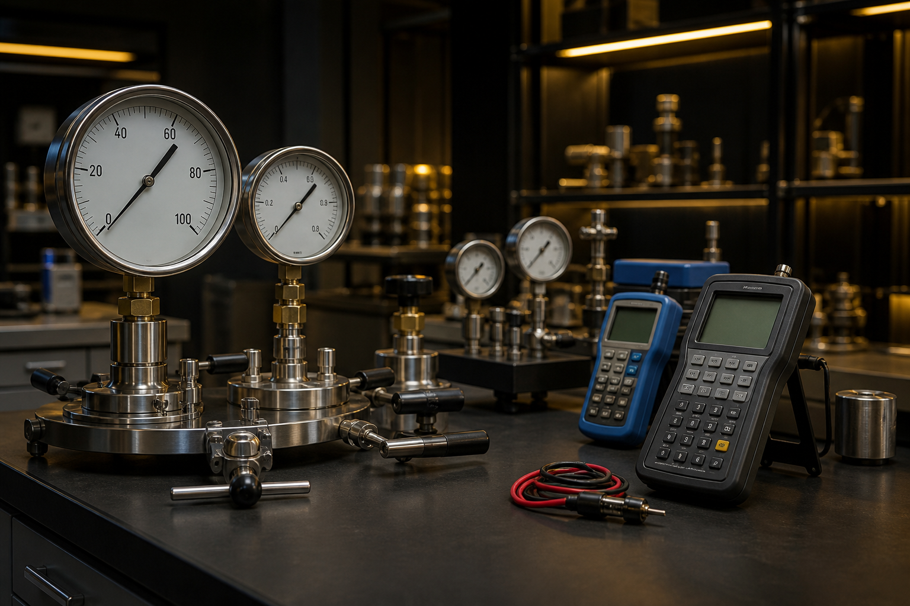

Aşağıdaki liste özet kataloğumuzdur. Stok ve teslim süresi için teklif formunu kullanınız. Fiyatlar proje şartnamesine göre netleşir.
| Kod | Ürün | Standart | Açıklama |
|---|---|---|---|
| ADA-P-5L | Hat borusu | API 5L / EN 10208 | Karbon çelik, dikişli-dikişsiz, kaplamalı seçenek |
| ADA-V-BALL | Küresel vana | API 6D / ASME B16.34 | Class 150–2500, full bore, fire-safe |
| ADA-V-GATE | Sürgülü vana | API 600 | Rising stem, flexible wedge |
| ADA-F-WN | WN flanş | ASME B16.5 / B16.47 | RF / RTJ, A105 / 316 |
| ADA-F-FIT | Fitting | ASME B16.9 | Dirsek, tee, cap, redüksiyon |
| ADA-T-HYD | Hidrostatik pompa | ISO 9001 izlenebilir | 70–1000 bar, elektrikli / dizel |
| ADA-T-REC | Basınç recorder | IEC | Dijital kayıt, chart recorder |
| ADA-T-UT | Ultrasonik kalınlık | EN ISO 16809 | Saha tipi UT cihazı ve kalibrasyon bloğu |
| ADA-T-MT | Manyetik yonga seti | EN ISO 9934 | Yoke, toz, UV lamba |
| ADA-C-3LPE | Kaplama tamir | DIN 30670 | Heat shrink, soğuk sargı, primer |
| ADA-P-PIG | Pigging | Saha spesifikasyonu | Foam / cup pig ve yedek parça |
| ADA-K-CAL | Kalibrasyon hizmeti | İzlenebilir sertifika | Manometre ve pompa kalibrasyonu |